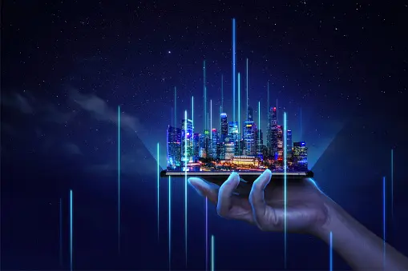
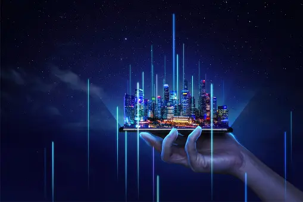
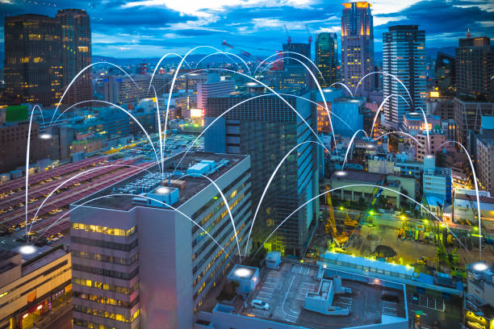

Welcome to our Smart Cities Website!
Explore the benefits and innovations of smart cities that are transforming urban living.
Explore the benefits and innovations of smart cities that are transforming urban living.
Smart cities leverage technology to enhance the efficiency of various services, including transportation, energy, and public safety. Real-time data and automation contribute to smoother operations and reduced resource consumption.
Smart cities prioritize sustainability by integrating green technologies and practices. This includes renewable energy sources, waste management solutions, and eco-friendly urban planning to create environmentally conscious urban spaces.
Residents of smart cities experience an improved quality of life through better access to services, efficient transportation, and increased safety. Smart technologies contribute to creating vibrant and connected communities.
Smart cities deploy advanced healthcare technologies, such as telemedicine and remote patient monitoring, to improve healthcare accessibility and provide timely medical assistance to residents.
Smart cities implement digital governance systems to enhance public services and civic engagement. This includes online platforms for government services, participatory decision-making, and open data initiatives.
Smart traffic management systems use real-time data and intelligent algorithms to optimize traffic flow, reduce congestion, and enhance overall transportation efficiency, leading to reduced commute times.
IoT sensors and devices are deployed across the city to collect and transmit data, enabling better decision-making and real-time monitoring of various services.
Big data technologies process and analyze large datasets generated by smart city systems, extracting valuable insights to improve efficiency and optimize urban planning.
AI is used for predictive analytics, automation, and decision-making processes in smart cities, contributing to increased efficiency and resource optimization.
Smart cities incorporate renewable energy sources, such as solar and wind power, to promote sustainability and reduce dependence on traditional energy grids.
Smart grids enable efficient energy distribution, allowing for better management of electricity consumption and integration of renewable energy sources.
AR technologies assist urban planners in visualizing and designing smart city infrastructure, improving decision-making and public engagement.
Blockchain technology enhances the security and transparency of smart city systems, ensuring the integrity of data and transactions.
While smart cities offer numerous benefits, they also face several challenges in their implementation:
The collection and analysis of large amounts of data raise concerns about individual privacy and the potential for cyber threats.
Implementing smart city technologies often requires significant investment in infrastructure and ongoing maintenance costs.
The integration of diverse technologies from different vendors can lead to interoperability challenges, hindering seamless communication between systems.
Engaging citizens and gaining their acceptance for smart city initiatives can be a challenge, requiring effective communication and education.
The evolution of smart cities continues, with emerging trends shaping the future:
The rollout of 5G networks will enhance connectivity, enabling faster communication and supporting the widespread deployment of IoT devices.
The integration of autonomous vehicles into smart city transportation systems is expected to improve traffic flow and reduce congestion.
Future smart cities will focus on citizen-centric design, involving residents in decision-making processes and tailoring services to their needs.
Edge computing will play a crucial role in processing data closer to its source, reducing latency and enhancing the efficiency of smart city applications.
Smart cities will increasingly adopt circular economy practices, emphasizing sustainable resource use and minimizing waste through recycling and reusing materials.
Several cities in India are undergoing transformation into smart cities. Here are a few examples:
Bengaluru, known as the Silicon Valley of India, is implementing smart city solutions to address traffic congestion, waste management, and improve citizen services.
Pune focuses on sustainable urban development with projects related to energy efficiency, public transportation, and smart governance initiatives.
Jaipur is incorporating smart technologies in areas such as traffic management, heritage conservation, and citizen engagement to enhance the overall quality of life.
Ahmedabad is leveraging smart solutions for efficient waste management, intelligent traffic systems, and the promotion of renewable energy sources.
Welcome to our Smart Cities Website! Learn more about the visionaries behind this project.
Co-founder and visionary leader with a passion for leveraging technology to improve urban living.
Co-founder and technology enthusiast, dedicated to implementing innovative solutions for smart cities.
Co-founder and sustainability advocate, committed to integrating eco-friendly practices into urban development.
If you need assistance or have any questions, please feel free to reach out to our support team.
For inquiries and partnerships, you can contact us via email at info@smartcities.com.